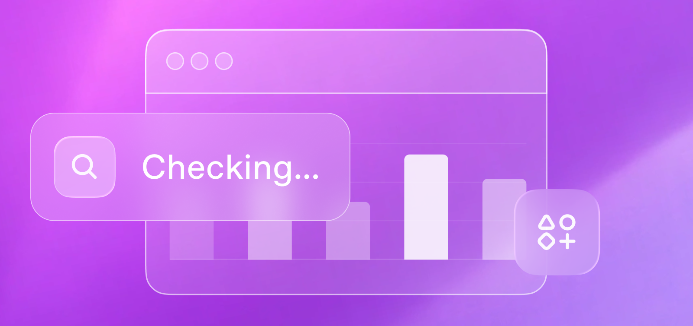

Collections
Productivity & Collaboration Coordinate work across plugins, data, and teams. Business Operations Turn initiative context and metrics into decision-ready work. Data Science Turn questions, dashboards, and raw data into review-ready analysis. Web development Build responsive UI from designs and prompts. Game development Prototype loops, UI, and gameplay faster. Native development Build and debug iOS and macOS apps. Production systems Navigate, refactor, and review real codebases. Security Find and fix vulnerabilities in your code. Finance Build, review, and report from financial models and operating data. Sales Turn account context and deal signals into pipeline actions. Life Sciences Use GPT-Rosalind to accelerate scientific research and drug discovery. Education Turn teaching, learning, and academic work into review-ready artifacts.
Featured
Start with common ChatGPT workflows.
All use cases
Sort:Sort use casesRecommended



Prioritize drug targets
Rank drug targets across multiple evidence lanes.
Sciences Data


Build a student website
Turn an idea and source material into a tested first version.
Front-end Code

No use cases match these filters
Try clearing a few filters or searching for a broader term.